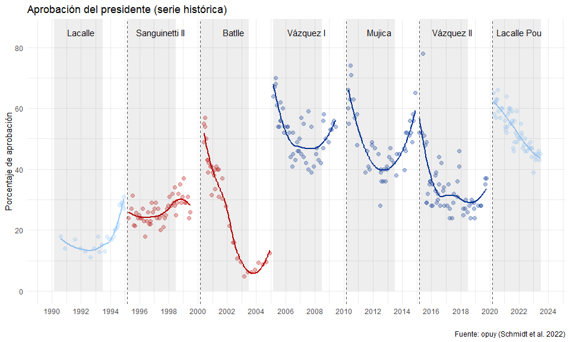

Nicolás Schmidt, Daniela Vairo, UMAD1.
Datos de opinón pública de Uruguay 1989 - 2020.
Descripción
Provee un conjunto de datos de opinión publica en Uruguay para el periodo que va desde 1989 hasta 2020 de dos indicadores relevante para el estudio de la realidad política del país: intención de voto y evaluación de gestión del presidente.
El manual del paquete se puede encontrar aquí.
Instalación
## Versión en desarrollo source("https://install-github.me/Nicolas-Schmidt/opuy")
Contenido del paquete
Funciones
| Nombre | Descripción |
|---|---|
resumen_opuy |
Resumen de los indicadores que contiene la base de datos por consultora |
Conjuntos de datos
| Nombre | Descripción |
|---|---|
opuy |
Conjunto de datos que contiene dos indicadores de opinión pública relevante para trabajar con datos políticos para el período 1989 - 2020: Intención de voto y Evaluación de la gestión del Presidente. Los valores para ambos indicadores son agregados ya que no se cuenta con los microdatos. La fuente de los datos es el Banco de Datos de la Faculta de Ciencias Sociales (UMAD). |
Ejemplo
## Conjunto de datos: 'opuy' library(opuy) resumen_opuy() #> #> #> ---- Resumen de Indicadores por anio y consultora --------------------------- #> #> #> Cifra Equipos Factum Interconsult Opcion Radar #> ---- ----------- ----------- ----------- ----------- ----------- ----------- #> 1989 - | - IV| - - | - - | - - | - - | - #> 1990 - | - IV|EG - | - - | - - | - - | - #> 1991 - | - IV|EG - | - - | - - | - - | - #> 1992 - | - IV|EG - | - - | - - | - - | - #> 1993 IV| - IV|EG IV| - - | - - | - - | - #> 1994 IV| - IV|EG IV| - - | - - | - - | - #> 1995 - | - - |EG IV| - - | - - | - - | - #> 1996 - | - - |EG IV| - - | - - | - - | - #> 1997 - | - IV|EG IV| - - | - - | - - | - #> 1998 - | - IV|EG IV| - IV| - - | - IV| - #> 1999 IV| - IV|EG IV| - IV| - - | - IV| - #> 2000 - |EG - |EG IV|EG - | - - | - - | - #> 2001 - | - - |EG IV|EG - | - - | - - | - #> 2002 - | - IV|EG IV|EG - | - - | - - | - #> 2003 IV| - - |EG IV| - IV| - - | - IV| - #> 2004 IV| - IV|EG IV| - IV| - - | - IV| - #> 2005 - |EG - |EG - | - IV|EG - | - - |EG #> 2006 - | - - |EG - |EG IV|EG - | - - | - #> 2007 - | - - |EG IV| - IV|EG - | - - | - #> 2008 IV|EG IV|EG IV| - IV|EG - | - IV| - #> 2009 IV| - IV|EG IV| - IV| - - | - IV| - #> 2010 - |EG IV|EG IV|EG - |EG - | - - | - #> 2011 IV|EG IV|EG IV| - - | - - | - - | - #> 2012 IV|EG IV|EG IV| - - | - - | - IV|EG #> 2013 IV|EG IV|EG IV| - IV| - - | - IV| - #> 2014 IV|EG IV|EG IV| - IV| - IV|EG IV| - #> 2015 - |EG IV|EG - |EG - | - - |EG - | - #> 2016 IV|EG IV|EG IV|EG IV| - IV|EG - | - #> 2017 IV|EG IV|EG IV|EG IV| - IV|EG IV| - #> 2018 IV|EG IV|EG IV| - - | - IV|EG IV| - #> 2019 IV|EG IV|EG IV| - - | - IV|EG IV| - #> 2020 - |EG - |EG - | - - | - - | - - | - #> #> IV: Intencion de Voto #> EG: Evaluacion de gestion #> #> -----------------------------------------------------------------------------
Intención de voto para elecciones nacionales medidas en 2019 por todas las consultoras
library(tidyverse) data(opuy) opuy %>% filter(medicion == 'Intencion de voto', tipo_eleccion == 'Nacional', anio_medicion == 2019, sigla %in% c('FA', 'PC', 'PN', 'CA')) %>% mutate(partido = factor(partido, levels = c('Frente Amplio', 'Partido Colorado', 'Partido Nacional', 'Cabildo Abierto'))) %>% ggplot(aes(x = fecha, y = valor, color = empresa)) + geom_line(aes(group = empresa), size = 1, alpha = 0.6) + geom_point(size = 1.5) + facet_wrap(~partido, nrow = 1) + hrbrthemes::theme_ipsum_tw(grid = "XY", axis = "xy") + labs(x = "", y = "Porcentaje de votos %", color = "", title = "Intención de voto en elecciones nacionales 2019", subtitle = '27 de octubre de 2019 \nMediciones del año 2019', caption = 'Fuente: Unidad de Métodos y Acceso a Datos (UMAD)')

Intención de voto para elecciones nacionales de todas las consultoras para todo el período de medición de la elección de 2019 (2016 - 2019)

Resumen intención de voto 2019 de los principales partidos para toda la serie correspondiente a la elección nacional de 2019 (2016 - 2019)
| Partido | Valor Mínimo | Valor Máximo | Valor Mínimo 2019 | Valor Máximo 2019 | Votación real |
|---|---|---|---|---|---|
| Frente Amplio | 24% | 43% | 27% | 43% | 39.25% |
| Partido Nacional | 21.6% | 34% | 21.6% | 33% | 28.79% |
| Partido Colorado | 3% | 22% | 9% | 22% | 12.41% |
| Cabildo Abierto | 1% | 12% | 1% | 12% | 11.11% |
Evaluación de la gestión del presidente
opuy %>% filter(medicion == 'Evaluacion de gestion presidente', categoria_unificada == 3) %>% select(anio_gobierno, empresa, valor, presidente) %>% group_by(empresa, anio_gobierno, presidente) %>% summarise(promedio = mean(valor, na.rm = TRUE)) %>% ungroup() %>% mutate(presidente = factor(presidente, levels = c("Lacalle", "Sanguinetti 2", "Batlle", "Vazquez 1", "Mujica", "Vazquez 2", "Lacalle Pou"))) %>% ggplot(aes(x = factor(anio_gobierno), y = promedio, color = empresa)) + geom_line(aes(group = empresa), size = 1, alpha = 0.6) + geom_point(size = 1.5) + facet_wrap(~presidente, nrow = 1) + hrbrthemes::theme_ipsum_tw(grid = "XY", axis = "xy") + labs(x = "Año de gobierno", y = "Porcentaje de aprobación", color = "", title = "Evaluacion de la gestión del presidente", subtitle = 'Serie histórica con datos de todas las consultoras (promedios anuales)', caption = 'Fuente: Unidad de Métodos y Acceso a Datos (UMAD)')

Citar
Para citar el paquete opuy en publicaciones use:
citation(package = 'opuy') #> #> #> A BibTeX entry for LaTeX users is #> #> @Manual{, #> title = {opuy: Datos de Opinion Publica de Uruguay 1989 - 2020}, #> author = {Nicolas Schmidt and Daniela Vairo and {UMAD}}, #> year = {2020}, #> note = {R package version 0.1.1}, #> url = {https://nicolas-schmidt.github.io/opuy/}, #> }
Mantenedor
Nicolás Schmidt (nschmidt@cienciassociales.edu.uy)
Notas
1 Unidad de Métodos y Acceso a Datos, Facultad de Ciencias Sociales, Universidad de la República (UMAD-FCS-UdelaR)